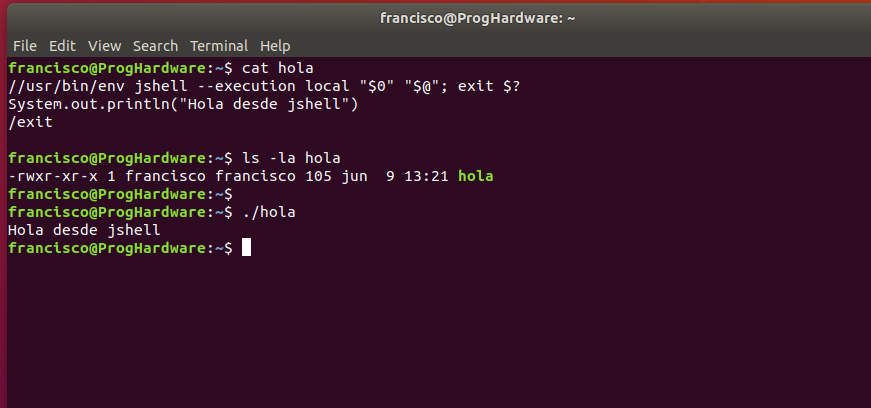
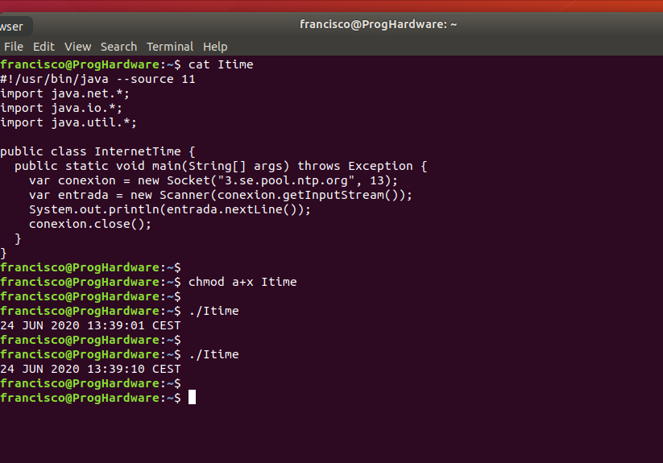

Aunque la mayor parte de usuarios de GNU/Linux han interactuado en algún momento con Bash, al acceder a una línea de comandos o terminal, aquellos con cierta experiencia conocen además la potencia de Bash como lenguaje de scripting. Gracias a él es posible automatizar infinidad de tareas, no necesitándose más que un editor de texto básico para escribir el script. La asignación de permisos de ejecución, junto con la inclusión en la primera línea del script del conocido como shebang:
{% highlight bash %} #!/bin/bash instrucciones_del_script {% endhighlight %}En realidad, el shebang es un mecanismo genérico que nos permite comunicar al sistema operativo qué intérprete debe usar para ejecutar el script, lo cual abre las puertas a usar otros lenguajes como Perl o Python. La sintaxis básica de la shebang es la mostrada a continuación:
{% highlight bash %} #!ruta_al_intérprete [parámetros] instrucciones_del_script {% endhighlight %}Los que comienzan a trabajar con GNU/Linux, o aquellos que no han llegado a familiarizarse con la peculiar sintaxis de bash a pesar de llevar más tiempo usando dicho sistema operativo, pueden recurrir al citado mecanismo genérico para escribir sus scripts en el lenguaje de programación que más cómodo les resulte. Este tutorial está dirigido especialmente a programadores que, conociendo el el lenguaje Java, quieren automatizar tareas simples con scripts sencillos escritos en dicho lenguaje.
La mayoría de los programadores, especialmente aquellos que usamos Java desde hace años, tienen asumido que se trata de un lenguaje de programación apropiado para el desarrollo de aplicaciones empresariales. Al igual que otros lenguajes clásicos, como C o C++, Java está sujeto al ciclo Edición - Compilación - Ejecución y suele emplearse un entorno de desarrollo específico para trabajar con él.
Las últimas versiones de Java, sin embargo, han ido incorporando características que hacen posible su uso como un lenguaje de scripting más, al estilo de Perl, Python o el propio Bash. Los dos cambios más importantes se producen con Java 9, lanzado a finales de 2017, y con Java 11, disponible desde finales de 2018.
Desde 1995 a 2017 solo han existido ocho versiones principales de Java, pero desde Java 9 se está lanzando una nueva versión cada 6 meses, lógicamente con menos novedades y cambios respecto a las versiones previas.
jshellDesde la versión 9 el JDK de Java incluye una utilidad, denominada jshell, que funciona como una línea de comandos Java. Sin necesidad de escribir clases ni funciones, jshell permite ejecutar cualquier sentencia Java.
En este módulo de mi Github, por ejemplo, puedes ver una sesión en la que mediante jshell se usan unas bibliotecas externas para analizar datos.
Aunque jshell está pensado para su uso de forma interactiva, también permite ejecutar scripts que tengamos almacenados en un archivo. Para ello no tenemos más que invocar a la herramienta facilitando el nombre de dicho archivo. Este finalizará habitualmente con la orden /exit para devolver el control, en lugar de quedarse a la espera en la propia línea de comandos de jshell.
Podemos convertir un script Java en uno ejecutable desde la línea de comandos de Linux simplemente agregando una cabecera de una línea, tal y como se muestra en el siguiente ejemplo:
{% highlight java %}
//usr/bin/env jshell --execution local "$0" "$@"; exit $?
System.out.println("Hola desde jshell")
/exit
{% endhighlight %}
La secuencia de inicio // es análoga a #!, con la ventaja de que no interfiere en la posterior interpretación del archivo por parte de jshell. Con el comando env localizamos la ruta donde está instalado jshell, al que facilitamos como parámetros el propio nombre del archivo que contiene el script, representado por $0, y el vector con el resto de parámetros facilitados desde la línea de comandos, parámetro $@.
Al ejecutar esa primera parte de la cabecera, jshell leerá el contenido del script, lo ejecutará y, dado que el último comando es /exit, devolverá el control. Este retornará a la primera línea del archivo, tras el punto y coma de separación, encontrándose con la instrucción exit. Su finalidad es terminar la ejecución sin que bash procese el resto del código.
Tras dar permisos de ejecución a este archivo, en la siguiente imagen podemos ver cómo se ejecuta directamente desde la línea de comandos como lo haría cualquier otro script en Linux:

Las versiones 11 y posteriores de Java incorporan una funcionalidad nueva que permite ejecutar directamente módulos de código fuente Java sin necesidad de compilación. Solo funciona para módulos aislados, es decir, no podemos ejecutar directamente una aplicación compleja que se componga de múltiples clases distribuidas por varios archivos fuente. No obstante, de cara a hacer posible el scripting usando Java eso es todo lo necesario.
Asumiendo que hemos creado un archivo programa.java conteniendo una clase Java, con su correspondiente función main(), para ejecutarla no tenemos más que escribir en la consola java programa.java. La invocación a java puede llevarse a cabo mediante la notación shebang descrita antes. Habitualmente se agrega el parámetro --source N para indicar la versión de Java a la que se ajusta el código fuente.
En el siguiente ejemplo, alojado en un archivo llamado Itime, usamos los servicios de sockets de Java para conectar con un servidor NTP de Internet y obtener la fecha y hora actuales, mostrándolos por la consola:
Siempre dando por supuesto que tenemos instalada en nuestro sistema una versión de Java 11 o posterior, bastaría con dar permisos de ejecución a Itime para poder ejecutarlo como un script cualquiera.
